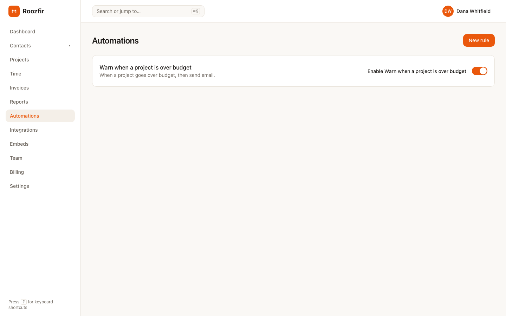
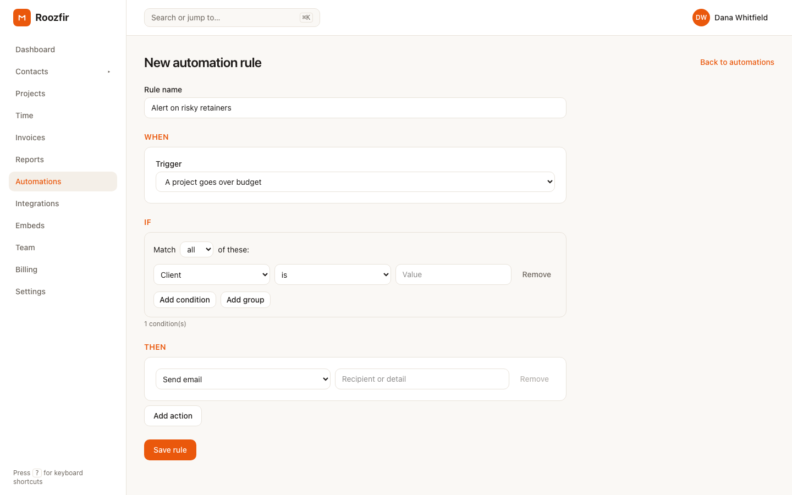

Help Center » Reports, team and automations
How to set up an automation rule
An automation does something for you when a thing happens. Each rule has three parts: when, if, and then.
- Open Automations in the left-hand menu.

The Automations page with the existing rules - Click New rule and give the rule a name.
- Under When, choose the trigger, for example "A project goes over budget".
- Under If, click Add condition and fill in the field, the operator and the value. Use Add group for conditions that should match "any" instead of "all".

The rule builder with the name, trigger and a first condition - Under Then, choose what should happen, such as sending an email. Click Add action for more.
- Click Save rule.